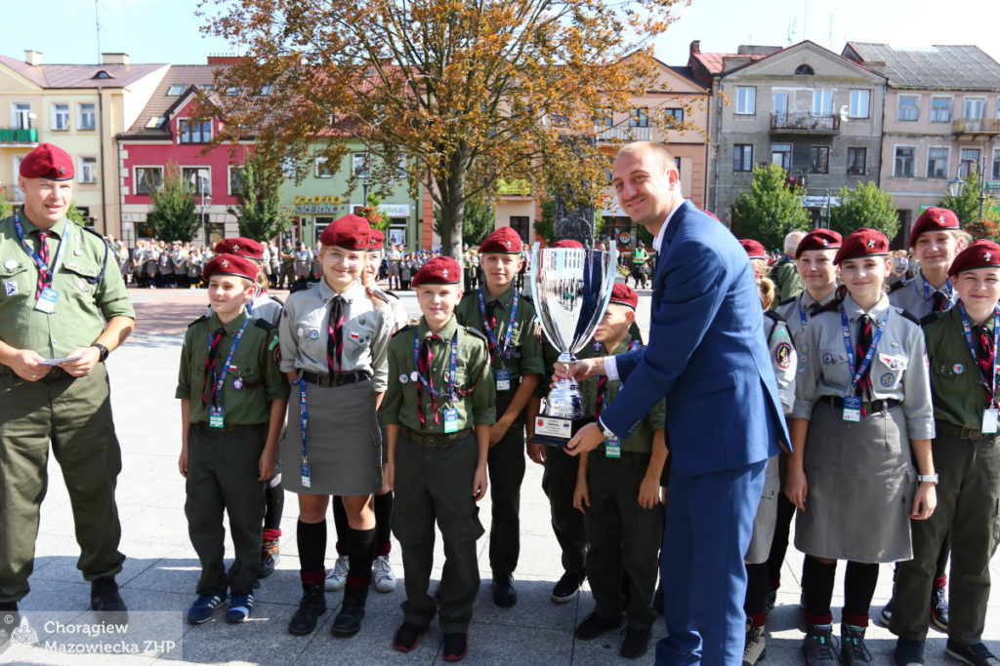

Chorągiew Mazowiecka ZHP
im. Władysława Broniewskiego

Początki działaności harcerskiej na Mazowszu.
Harcerstwo mazowieckie w okresie międzywojennym.
Działalność po II wojnie światowej.
| Chorągiew Mazowiecka ZHP im. Władysława Broniewskiego | |
| Rodzaj jednostki | Chorągiew |
| Jednostka nadrzędna | Główna Kwatera ZHP |
| Jednostki podległe | 26 hufców |
| Rok powstania pierwszych drużyn | 1912 |
| Adres siedziby | ul. Krótka 3a 09-402 Płock |
Chorągiew Mazowiecka współcześnie
| Hufiec | Adres | Komendant |
| Ciechanów | Bd. | Bd. |
| „Doliny Liwca” w Węgrowie | Bd. | Bd. |
| Gostynin | Bd. | Bd. |
| Grójec | Bd. | Bd. |
| Jaktorów | Bd. | Bd. |
| Lipsko | Bd. | Bd. |
| „Mazowsze” Mińsk Mazowiecki | Bd. | Bd. |
| „Mazowsze” Płock | Bd. | Bd. |
| Maków Mazowiecki | Bd. | Bd. |
| Mława | Bd. | Bd. |
| Mszczonów | Bd. | Bd. |
| Ostrołęka | Bd. | Bd. |
| „Podlasie” w Siedlcach | Bd. | Bd. |
| Pionki | Bd. | Bd. |
| Płock | Bd. | Bd. |
| Przasnysz | Bd. | Bd. |
| Przysucha | Bd. | Bd. |
| Radom-miasto | Bd. | Bd. |
| Radom-powiat | Bd. | Bd. |
| Sierpc | Bd. | Bd. |
| Sochaczew | Bd. | Bd. |
| Sokołów Podlaski | Bd. | Bd. |
| Wyszków | Bd. | Bd. |
| Żuromin | Bd. | Bd. |
| Żyrardów | Bd. | Bd. |